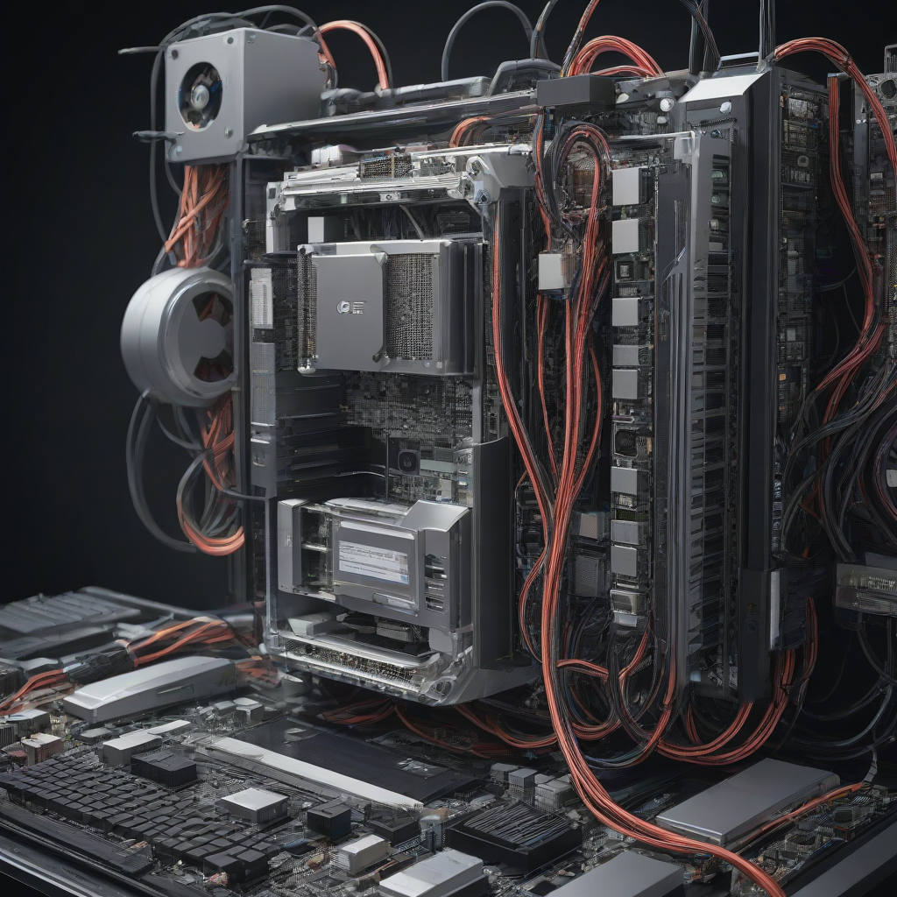

¿Quieres cambiar de proveedor de internet sin cortes en México? La buena noticia es que, en 2026, es totalmente posible hacerlo con cero interrupción, siempre y cuando sigas los pasos correctos y planifiques con anticipación. Grandes empresas como Totalplay, Izzi, Infinitum (Telmex), Megacable e incluso Dish ofrecen opciones flexibles de migración, incluyendo transferencias de número de línea (si aplica), reutilización de equipos y hasta compensaciones por cancelación anticipada. En esta guía aprenderás cómo evitar los temidos cortes, qué preguntas hacer antes de firmar, cómo negociar mejor precio y cuándo vale la pena cambiar —todo basado en los precios reales, condiciones actuales y experiencias reales de usuarios en México.
- Para cambiar de proveedor de internet sin cortes en 2026, solicita la portabilidad con al menos 10 días de anticipación y verifica si tu actual contrato permite cancelación anticipada sin multa.
- Las empresas Totalplay, Izzi, Infinitum y Megacable ofrecen paquetes desde $349 MXN/mes, con velocidades que van de 100 a 1000 Mbps.
- Si cambias a Dish o Virgin Mobile, recuerda que no ofrecen internet fijo, solo móviles, por lo que no son opciones para reemplazar tu conexión doméstica.
- El proceso legal permite hasta 5 días hábiles para la portabilidad de línea telefónica (si necesitas un número fijo), pero el servicio de internet puede instalarse en paralelo sin esperar.
El contexto: ¿por qué cambiar sin cortes es más viable que nunca en 2026?
En años anteriores, cambiar de proveedor de internet en México solía significar días sin conexión: esperas la instalación nueva, cancelas el anterior, y si falla algo en la portabilidad del cable, te quedas sin internet. Pero en 2026, el mercado ha madurado: la Comisión Federal de Telecomunicaciones (Cofetel) exige a los operadores ofrecer planes de transición claros, y prácticamente todas las grandes empresas ahora tienen sistemas de “instalación express” que pueden activar tu servicio nuevo en menos de 24 horas en zonas urbanas.
Además, la competencia es feroz. Empresas como Totalplay y Izzi lanzaron promociones agresivas para atrapar clientes de Infinitum, mientras Megacable ha expandido su cobertura

Comparativa detallada: precios y condiciones reales en 2026
¿Qué tan caro es cambiar? Precios reales de los principales proveedores
Antes de decidirte, compara precios reales de los paquetes más populares (internet + TV + teléfono fijo). Aquí están los datos actualizados al primer semestre de 2026:
| Proveedor | Plan básico ($/mes) | Plan medio ($/mes) | Plan premium ($/mes) | Velocidad máxima | ¿Instalación gratis? |
|---|---|---|---|---|---|
| Izzi | $349 | $599 | $899 | 1000 Mbps | Sí (con contrato de 12 meses) |
| Totalplay | $399 | $649 | $1199 | 1000 Mbps | Sí (sin contrato) |
| Infinitum (Telmex) | $389 | $649 | $999 | 1000 Mbps | Depende de zona (desde $499) |
| Megacable | $399 | $629 | $899 | 500 Mbps | Sí (con promoción activa) |
Como ves, Izzi sigue siendo la opción más económica para quienes buscan calidad y cobertura nacional, mientras que Totalplay destaca por su flexibilidad (sin contrato) y su red de fibra óptica propia en CDMX, Guadalajara y Monterrey.
¿Qué incluyen realmente estos paquetes?
- Izzi: Incluye app móvil para ver TV en cualquier dispositivo, cero instalación en zonas urbanas (si ya hay red disponible), y soporte técnico 24/7.
- Totalplay: Su plan “Totalplay 360” añade streaming ilimitado de contenido exclusivo, y puedes usar tu propio router (ellos dan el Wi-Fi 6 gratis si lo pides).
- Infinitum: Si ya eres cliente Telcel y tienes un plan móvil premium, puedes sumar internet fijo con descuento de hasta 30% (¡una de las mejores promociones de 2026!).
- Megacable: Cuenta con canales regionales exclusivos y paquetes de deportes como “Premier Sports 2” incluidos en el plan medio.
Recuerda: los precios que mencionamos son para contrataciones por internet o app. Si vas a una sucursal física, casi siempre te ofrecen menos beneficios.
Paso a paso: cómo cambiar de proveedor de internet sin cortes (con ejemplos reales)
No necesitas ser un experto técnico para lograrlo. Sigue estos pasos, y te garantizo que tu conexión se mantendrá activa durante todo el proceso:
- Revisa tu contrato actual
Accede a tu cuenta en el portal del proveedor (Telcel para Infinitum, Izzi App, Totalplay App, etc.) y busca “términos y condiciones” o “cancelación”. Si estás dentro de un contrato, verifica cuánto falta para que termine y si hay una cláusula de cancelación anticipada. Por ejemplo, en 2026, Infinitum ya no cobra multas si cancelas con 30 días de anticipación (solo si no tienes equipos sin devolver). - Elige tu nuevo proveedor y solicita la portabilidad
Ahora que sabes qué empresa te conviene más, contacta al nuevo proveedor. Con Totalplay o Izzi, puedes hacerlo por app o llamada y te dan un número de seguimiento. Pide que inicien el proceso de portabilidad de tu número fijo (si lo tienes). Importante: el número fijo solo se puede portar si tu proveedor actual lo ofrece (Infinitum y Megacable sí lo hacen; Izzi y Totalplay lo hacen solo si ya estás en su red). - Solicita instalación en paralelo
Solicita la instalación del nuevo servicio para un día que esté al menos 2 días después de la cancelación de tu servicio actual. Así, si hay algún retraso, aún tienes internet. Por ejemplo: si cancelas tu servicio de Infinitum el lunes, pide que te instalen con Totalplay el miércoles o jueves. En la práctica, Totalplay instala en menos de 24 horas en zonas urbanas. - Devuelve equipos (si aplica)
No olvides devolver el router, decoder o módem de tu proveedor anterior. Izzi y Infinitum envían mensajería gratuita para recogerlos; Totalplay te da un código de descarga para que lo devuelvas en any Oxxo. - Verifica que todo funcione
El primer día, prueba: conexión Wi-Fi, llamadas telefónicas (si tienes línea fija), TV en vivo y velocidad con una prueba de velocidad confiable. Si hay algún problema, contacta al soporte técnico inmediatamente —todos los proveedores tienen soporte en español y sin wait time en horario laboral.
Un ejemplo real: Mariana, de Coyoacán, cambió de Infinitum a Totalplay el 15 de marzo de 2026. Canceló su plan “Fibra 300” el lunes, solicitó instalación con Totalplay para el miércoles, y el técnico llegó a las 10:30 a.m. ¡Sin cortes, sin estrés, y pagó $599 MXN menos al mes!
Preguntas frecuentes
¿Puedo cambiar de proveedor de internet sin perder mi número fijo?
Sí, en 2026 es totalmente posible gracias a la portabilidad numérica obligatoria para servicios fijos. Solo necesitas que tu proveedor actual te dé un “certificado de número activo” (lo puedes solicitar por app o chat) y entregárselo al nuevo proveedor. Megacable y Infinitum son los más ágiles en este proceso (2 días hábiles), mientras que Totalplay y Izzi pueden tardar hasta 5 días si hay tráfico en su red.
¿Qué pasa si tengo equipos rentados de mi proveedor actual?
Antes de cancelar, revisa tu contrato: si rentaste decoders, módems o routers, deberás devolverlos. Si no lo haces, te cobrarán el valor total (hasta $2,500 MXN por decoder). En 2026, muchas empresas ofrecen “programas de devolución sin cargo” si cancelas con 30 días de anticipación. Por ejemplo, Izzi te devuelve el equipo si lo entregas en un centro comercial Izzi dentro de los 7 días posteriores a la cancelación.
¿Vale la pena cambiar si mi proveedor actual me ofrece un descuento?
No siempre. Un descuento del 20% en tu plan actual puede parecer bueno, pero compáralo con lo que ofrecen nuevos clientes en 2026. Por ejemplo, Totalplay ofrece 3 meses gratis en el plan $599 (equivalente a $424 MXN/mes), lo que supera cualquier descuento de Infinitum. Antes de aceptar, pregunta: “¿Este descuento es permanente o solo por 3 meses?”, y “¿cuánto subirá después?”. Si no te lo aclara por escrito, no firmes.
¿El cambio de proveedor afecta mi servicio de TV por cable?
Sí y no. Si cambias de Megacable a Izzi, por ejemplo, perderás los canales regionales que ofrecía Megacable (como “Canal 10 de Jalisco”) a menos que el nuevo proveedor los tenga en su paquete. Si te importa la TV en vivo, antes de cambiar, revisa el listado de canales del nuevo proveedor en su página web. Izzi tiene más canales nacionales; Totalplay apuesta más por streaming y apps como Netflix y Disney+ incluidos en algunos planes.
¿Qué hago si mi cambio se retrasa y me quedo sin internet?
En 2026, la Cofetel exige que los proveedores ofrezcan compensación si fallan en instalar a tiempo. Con Totalplay y Izzi, si la instalación se retrasa más de 24 horas (en zonas urbanas), te dan un bono de $100 MXN por día de retraso. Guarda tus tickets de instalación y llama al centro de atención al cliente con el número de caso. ¡No te quedes callado: es tu derecho!
Conclusión: ¿quién debería cambiar y cuándo?
Si buscas cambiar de proveedor internet sin cortes en 2026, lo más importante no es el precio por sí solo, sino la combinación de velocidad, flexibilidad y soporte técnico. Izzi sigue siendo la mejor opción para quienes quieren estabilidad y cobertura nacional, mientras que Totalplay brilla para usuarios tech-savvy que valoran el contrato sin obligaciones y velocidades reales de 500+ Mbps. Si ya estás en la red de Infinitum y pagas alto, 2026 es el momento perfecto para salir: con la nueva política de cancelación sin multa (con 30 días de aviso), puedes migrar a Megacable o Izzi y ahorrar hasta $300 MXN al mes.
Recuerda: nunca cambies sin antes revisar si tu dirección ya tiene cobertura del nuevo proveedor. Usa la herramienta de verificación de cobertura por colonia para evitar sorpresas.
¿Listo para migrar internet sin interrupción? Compara planes ahora con la herramienta interactiva de MejorConexión —solo tardas 3 minutos y obtienes una recomendación personalizada basada en tu colonia, presupuesto y necesidades reales.